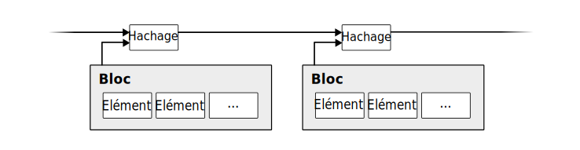
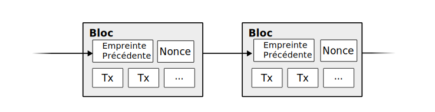
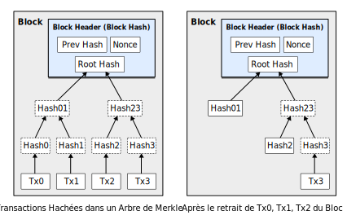
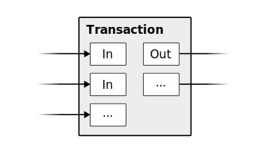
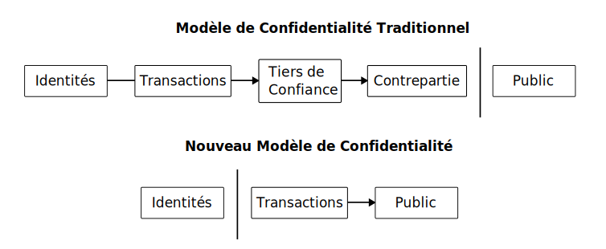

Ce document est une traduction de l'article :
Bitcoin: A Peer-to-Peer Electronic Cash System, Satoshi Nakamoto, October 31, 2008L'article de Satoshi Nakamoto est une preuve de concept de la monnaie Bitcoin. Il a été publié le 1er novembre 2008 dans la liste de diffusion "The Cryptography Mailing List".
Le texte original est disponible aux adresses suivantes :
Un glossaire ajouté par le traducteur introduit les notions nécessaires à la compréhension de l'article, et indique pour chaque notion le terme anglais utilisé dans la version originale.
Chronologie des révisions :Un véritable système d'échange monétaire de pair à pair devrait permettre le paiement en ligne directement entre les participants sans la médiation d'une institution financière. La signature numérique fait partie de la solution, mais ses avantages sont annulés si un tiers de confiance est requis pour empêcher la double-dépense. Nous proposons une solution au problème de la double-dépense, en utilisant un réseau de pair-a-pair. Le réseau horodate les transactions, en enregistrant leur empreinte numérique dans une chaîne continue de preuves-de-travail, chaque enregistrement ne pouvant être altéré sans refaire la preuve-de-travail. Non seulement, la plus longue chaîne de preuves-de-travail témoigne de la séquence des événements observés, mais prouve aussi qu'elle est engendrée par le plus grand regroupement de processeurs. Aussi longtemps qu'une puissance de calcul est contrôlée par une majorité de nœuds, qui ne s'accordent pas pour pirater le réseau, cette majorité générera la plus longue chaîne et devancera tous les pirates. Le réseau lui-même nécessite une structure minimale. Les messages sont diffusés le plus largement possible et les nœuds peuvent quitter ou rejoindre le réseau à tout moment, ils accepteront la plus longue chaîne de preuves-de-travail, car elle certifiera les transactions qui sont apparues pendant leur absence.
Le commerce sur internet repose presque exclusivement sur les institutions financières, qui jouent le rôle de tiers de confiance pour traiter les paiements électroniques. Bien que le système fonctionne pour la plupart des transactions, il souffre néanmoins des faiblesses inhérentes au modèle basé sur la confiance. Une irréversibilité totale des transactions n'est pas réellement garantie, puisque les institutions financières ne peuvent éviter des conflits de médiation. Ce coût de médiation augmente le coût des transactions, limite en pratique le montant minimum des transactions, et donc la possibilité des petites transactions occasionnelles ; l'incapacité de garantir des paiements irrévocables pour des services non remboursables engendre un surcoût significatif. Avec le risque de réversibilité, l'exigence de confiance s'étend aux parties prenantes. Les sites de commerce se méfient, exigent de leurs clients plus d'informations que nécessaire. Un certain pourcentage de fraude est accepté comme inévitable. Ces coûts et paiements non garantis peuvent être évités par l'utilisation de monnaie en espèces, mais aucun mécanisme n'existe pour réaliser un paiement sur un canal de communication sans tiers de confiance.
Un système de paiement électronique basé sur la preuve cryptographique permettrait à deux parties prenantes de commercer directement entre elles, sans recourir à un tiers de confiance. L'impossibilité pratique d'inverser l'ordre des transactions protégerait de la fraude les destinataires de paiement, et des mécanismes courants de dépôts pourraient aisément être implémentés afin de protéger les payeurs. Dans cet article, nous proposons une solution au problème de la double-dépense en utilisant un service pair-à-pair d'horodatage distribué afin de générer une preuve calculable de l'ordre chronologique des transactions. Le système est sécurisé tant que les nœuds honnêtes contrôlent collectivement une puissance de calcul supérieure à toute coalition de pirates.
Nous définissons une monnaie électronique comme une chaîne 2.1 de signatures numériques. Chaque propriétaire transfère de la monnaie à un autre propriétaire en signant numériquement le code de hachage de la transaction précédente et de la clé publique du destinataire, puis en ajoutant ces éléments en fin de chaîne. Un destinataire de paiement peut vérifier les signatures afin de valider la chaîne des propriétaires 2.2.
Le problème bien sûr, est que le destinataire de paiement ne peut pas vérifier que l'un des propriétaires n'a pas dépensé deux fois la même monnaie. La solution communément admise est d'introduire une autorité centrale de confiance, ou un Hôtel de la Monnaie, qui contrôle la double-dépense de chaque transaction. Après chaque transaction, la monnaie doit être retournée à l'Hôtel de la Monnaie 2.3 afin d'émettre une nouvelle monnaie, et seule la monnaie émise directement par l'Hôtel de la Monnaie est considérée sure et non frauduleuse. Le problème avec cette solution est que la confiance dans le système dans son ensemble repose sur une institution chargée de contrôler la monnaie, chaque transaction étant soumise à cette autorité, tout comme à une banque.
Il est nécessaire pour le destinataire de paiement de s'assurer que les propriétaires précédents n'ont pas signé une transaction antérieure. Pour atteindre notre but, la transaction la plus récente est celle qui compte, ainsi nous ne prenons pas en compte les tentatives ultérieures de double-dépense. La seule façon de confirmer l'absence de transaction est d'être averti de toutes les transactions émises. Dans le modèle basé sur l'autorité de contrôle, l'autorité de contrôle est avertie de toutes les transactions et décide laquelle a été réceptionnée la première. Pour accomplir ceci sans un tiers de confiance, les transactions doivent être annoncées publiquement [1], et nous avons besoin d'un système permettant aux participants de s'accorder sur un ordre unique de réception des transactions. Le destinataire de paiement demande la preuve, qu'à l'émission d'une transaction, la majorité des nœuds attestent qu'elle est la première réceptionnée.
2.1 A ce stade de l'article, il faut considérer la chaîne de transactions comme le cheminement d'une unité de monnaie d'un propriétaire à l'autre. La dernière transaction indique le dernier propriétaire connu. (N.D.T)
2.2 Le schéma illustre le cas où le propriétaire 2 transfère une unité de monnaie au propriétaire 3 ; par analogie au paiement par chèque, la transaction est libellée au nom du propriétaire 3, et signée par le propriétaire 2 ; les deux transactions sont reliées par le hachage de la transaction précédente stockée sur la suivante ; il est toujours possible au propriétaire 3 de vérifier que le propriétaire 2 possède bien la monnaie par sa clé publique présente sur la transaction précédente, car la transaction est l'unique mode de paiement du système. (N.D.T)
2.3 Dans ce cas, la transaction est analogue à une lettre de change contrôlée par une autorité de contrôle. (N.D.T)
La solution que nous proposons repose sur un agent horodateur. Un agent horodateur crée un jeton d'horodatage avec l'empreinte numérique d'un bloc d'éléments à horodater, puis diffuse publiquement ce jeton dans un journal papier ou un article Usenet [2-5] 3.1. Le jeton d'horodatage prouve que la donnée existait bien à cette date, pour être associée évidemment à ce jeton. Chaque jeton d'horodatage inclut le jeton d'horodatage précédent par son empreinte numérique, formant une chaîne 3.2, chaque jeton ajouté venant renforcer les jetons précédents.
3.1 La publication du jeton d'horodatage dans un forum internet, tel que "Usenet", qui assure la réplication des messages sur les serveurs du monde entier, ou dans un journal imprimé, permet de prendre à témoin la population la plus large possible, ce qui renforce son authenticité. (N.D.T)
3.2 On a ici la définition du concept de blockchain, terme introduit postérieurement à l'article. (N.D.T)
Pour implémenter un agent horodateur avec une approche de pair à pair, nous aurons besoin d'un système de preuve-de-travail similaire au Hashcash de Adam Back [6], plutôt qu'un système de publication d'articles d'actualités ou de messages Usenet. La preuve-de-travail implique la recherche d'une valeur qui, une fois hachée, avec un algorithme comme SHA-256, débute avec un certain nombre de bits à zéro. Le travail moyen croit exponentiellement avec le nombre de bits requis, et peut être vérifié avec une seule exécution de la fonction de hachage.
Pour notre réseau d'agents horodateurs, nous implémentons la preuve-de-travail par incrément d'un nonce défini pour le bloc, jusqu'à obtenir les bits à zéro requis par hachage du bloc. Une fois que l'effort de calcul a été investi pour satisfaire la preuve-de-travail, le bloc ne peut être changé sans refaire le calcul. Etant donné que les blocs ultérieurs seront chaînés après celui-ci, le travail de changement du bloc exigerait de recalculer tous les blocs qui suivent.
La preuve-de-travail répond aussi au problème de représentation dans la prise de décision à la majorité. Si la majorité était basée sur une-adresse-IP = un-vote, elle pourrait être subvertie par quiconque serait capable d'allouer beaucoup d'adresses IP. La preuve-de-travail est essentiellement basé sur un-processeur = un-vote. La décision majoritaire est représentée par la plus longue chaîne dans laquelle est investi le plus grand effort de preuve-de-travail. Si une majorité de processeurs est contrôlée par les nœuds honnêtes, la chaîne la plus honnête grandira la plus vite et distancera les autres chaînes en compétition. Pour modifier un bloc antérieur, un pirate devrait refaire la preuve-de-travail de ce bloc et de tous les blocs qui lui sont postérieurs puis rattraper et surpasser le travail des nœuds honnêtes. Nous exposerons peu après que la probabilité que les nœuds honnêtes soient rattrapés par un pirate diminue exponentiellement à mesure que des blocs sont ajoutés.
Pour compenser la vitesse croissante du matériel et stimuler la participation des nœuds sur la durée, la difficulté de la preuve-de-travail est déterminée par une moyenne glissante ciblant un nombre moyen de blocs créés par heure. S'ils sont générés trop rapidement la difficulté augmente.
Les étapes pour faire fonctionner le réseau sont les suivantes :
Les nœuds considèrent systématiquement la plus longue chaîne comme la seule chaîne correcte, et s'appliqueront à l'étendre. Si deux nœuds propagent simultanément deux versions différentes du bloc ajouté, certains nœuds réceptionneront l'une ou l'autre en premier. Dans ce cas de figure ils travailleront sur la première branche 5.1, mais sauvegarderont la branche alternative au cas où elle deviendrait la chaîne la plus longue. Le choix est tranché dès que la prochaine preuve-de-travail est élucidée et dès que l'une des branches devient plus longue ; tous les nœuds qui travaillent sur l'autre branche se reportent alors sur la plus longue.
Les nouvelles transactions propagées n'atteignent pas nécessairement tous les nœuds. Tant qu'elles atteignent de nombreux nœuds, elles finiront par être ajoutées à un bloc. La diffusion des blocs est tolérante à la perte de blocs. Si un nœud ne reçoit pas un bloc, il le demandera lors de la réception du bloc suivant en constatant qu'il est manquant.
5.1 La branche est une bifurcation de chaîne de blocs créée en raison des deux versions. (N.D.T)
Par convention, la première transaction d'un bloc est une transaction spéciale qui crée une nouvelle monnaie attribuée au créateur du bloc. Cela incite les nœuds à participer au réseau et fournit un moyen d'introduire de la monnaie en circulation, car il n'existe pas d'autorité centrale pour émettre cette monnaie. Cette participation constamment monnayée est analogue à la démarche des chercheurs d'or qui affectent des ressources pour introduire de l'or en circulation. Dans notre cas c'est l'électricité et le temps de calcul qui sont affectés.
L'incitation peut aussi être financée avec des frais de transaction. Lorsque la valeur résultante d'une transaction est inférieure à sa valeur émise, la différence correspond à un frais de transaction ajouté au montant d'incitation de création du bloc contenant la transaction. Une fois qu'un montant prédéterminé de monnaie est entré en circulation, l'incitation peut être convertie entièrement en frais de transaction, évitant une inflation.
L'incitation peut encourager les nœuds à rester honnêtes, si un pirate cupide est en capacité de mobiliser plus de puissance de calcul que les nœuds honnêtes, il aura à choisir entre la fraude, pour récupérer ses paiements, et la création de monnaie. Il pourrait trouver plus profitable de respecter les règles qui favorisent sa position, plutôt que d'ébranler le système et donc nuire à son enrichissement personnel.
Lorsqu'un bloc est enfoui sous un nombre suffisant de blocs 7.1, les transactions dépensées avant la transaction la plus récente de ce bloc peuvent être retirées pour économiser de l'espace disque.
Pour faciliter ceci sans remettre en cause le hachage du bloc, le hachage des transactions est effectué avec un arbre de Merkle [7][2][5], en injectant uniquement la racine dans le hachage du bloc. Les blocs anciens peuvent être compactés en retirant des branches de l'arbre. Il n'est pas nécessaire de stocker les résultats de hachage internes.
La taille d'un en-tête de bloc sans les transactions serait de 80 octets environ. Si nous supposons que les blocs sont générés toutes les 10 minutes, cela représente 80 octets x 6 x 24 x 365 = 4,2 Mo par an. Etant donné des ordinateurs vendus typiquement avec 2 Go de mémoire vive en 2008, et d'une loi de Moore qui prédit un accroissement de la mémoire de 1,2 Go par an, le stockage ne devrait pas poser de problème même si les en-têtes doivent être conservés en mémoire.
7.1 Donc suffisamment âgé (N.D.T)
Il est possible de vérifier les paiements sans être un nœud participant complètement au réseau. Un utilisateur n'a besoin que de garder une copie des en-têtes de blocs de la plus longue chaîne de preuves-de-travail (qu'il peut obtenir en interrogeant les nœuds du réseau, jusqu'à être convaincu qu'il a obtenu la plus longue chaîne), et de la branche de Merkle qui relie la transaction au bloc horodaté. Il ne peut vérifier la transaction lui-même; mais en la localisant dans la chaîne, il peut constater qu'un nœud l'a acceptée, et qu'elle a été confirmée par les nœuds du réseau qui ont chaîné des blocs à sa suite.

Ainsi, la vérification est fiable tant que les nœuds honnêtes contrôlent le réseau, mais devient incertaine si le réseau est surpassé par un pirate. Malgré tout, cette méthode simplifiée peut être trompée par des transactions factices, le temps qu'un pirate surpasse le réseau. Une stratégie de défense serait d'accepter des alertes émises par les nœuds du réseau qui détectent un bloc non valide ; et de demander au logiciel de l'utilisateur de télécharger le bloc complet des transactions suspectes afin de confirmer les incohérences. Les commerçants qui reçoivent fréquemment des paiements souhaiteront probablement utiliser leurs propres nœuds pour une vérification indépendante et plus rapide.
Bien qu'il soit possible de gérer la monnaie par unité, il ne serait pas raisonnable de créer une transaction séparée pour chaque centime à transférer. Pour permettre la somme ou le fractionnement des avoirs, les transactions doivent posséder des registres d'entrée et de sortie. En général, il y aura soit un unique registre d'entrée issu d'une transaction d'un montant plus grand, soit de multiples registres d'entrée pour sommer des montants plus petits 9.1, et au moins deux registres de sortie : l'un pour le paiement, et un autre pour restituer, s'il y a lieu, la différence au payeur.
Il faudrait remarquer que l'arborescence des transactions, lorsqu'une transaction dépend de plusieurs transactions, qui elles même dépendent d'autres transactions, n'est pas un problème ici. Il n'est jamais nécessaire d'extraire une copie de l'historique complet d'une transaction.
9.1 Chaque registre d'entrée référence le registre de sortie d'une transaction antérieure. Ainsi chaque registre d'entrée représente la dépense d'un avoir, et chaque registre de sortie représente l'affectation d'un avoir à un utilisateur. Bien entendu, la somme des avoirs affectés doit être inférieure ou égale à la somme des avoirs dépensés. (N.D.T)
Le modèle bancaire traditionnel garantit un niveau de confidentialité en limitant l'accès à l'information privée, aux parties prenantes et au tiers de confiance. La nécessité d'annoncer toutes les transactions écarte cette approche, cependant la confidentialité peut être garantie d'une autre façon : en gardant les clés publiques anonymes. Chacun peut voir le transfert d'un montant d'un propriétaire à un autre mais sans relier cette information à quiconque. Ce principe est similaire au niveau d'information, transmis par les marchés boursiers pour lesquels l'heure et la quantité de chaque échange sur la "bande" du téléscripteur sont rendus publics, mais sans révéler l'identité réelle des parties prenantes.
Comme pare-feu additionnel, une nouvelle paire de clés devrait être utilisée pour chaque transaction de façon à préserver l'anonymat des personnes. Certaines traces restent inévitables car certaines transactions révèlent nécessairement que tous les registres d'entrée correspondent à des sommes versées par le même payeur. Le risque étant que si le propriétaire d'une clé est identifié, la chaîne pourrait révéler les autres transactions de ce propriétaire.
Nous considérons le scénario d'un pirate qui tente de générer une chaîne alternative plus rapidement que la chaîne honnête. Même si cela est accompli, cela ne signifie pas que le système est vulnérable à tout changement arbitraire, tel que créer de la monnaie ex nihilo, ou détourner de la monnaie. Les nœuds n'accepteront pas une transaction invalide, et les nœuds honnêtes n'accepteront jamais un bloc qui en contient une. Un pirate ne peut que tenter de modifier une de ses transactions pour récupérer l'argent qu'il a dépensé récemment.
La course de vitesse entre la chaîne honnête et la chaîne d'un pirate est caractéristique d'une marche aléatoire binomiale. L'événement "succès" correspond à la chaîne honnête étendue d'un bloc, augmentant son avance de +1, et l'événement "échec" correspond à la chaîne du pirate étendue d'un bloc, réduisant l'écart de -1.
La probabilité qu'un pirate rattrape son retard en partant d'un déficit donné est analogue au problème de la ruine du joueur. Supposons qu'un joueur avec un crédit illimité, démarre avec un déficit et joue potentiellement un nombre infini de coups afin d'atteindre équilibre. Nous pouvons calculer la probabilité d'atteindre l'équilibre, ou qu'un pirate rattrape la chaîne honnête, comme suit [8] :
p = probabilité qu'un nœud honnête trouve le prochain bloc
q = probabilité qu'un pirate trouve le prochain bloc
qz = probabilité qu'un pirate rattrape son retard malgré un déficit de z blocs
En partant de l'hypothèse que p > q, la probabilité tombe exponentiellement avec l'augmentation du nombre de blocs à rattraper par le pirate. Partant avec peu de chance de réussir, s'il ne parvient pas assez tôt à faire une avancée significative, ses chances s'amenuisent au fur et à mesure qu'il se laisse distancer.
Nous considérons maintenant le temps qu'un destinataire de paiement doit attendre pour être certain que le payeur ne puisse changer la transaction. Nous supposons que le payeur est un pirate qui tente de faire croire temporairement au destinataire de paiement qu'il est payé, puis qui détourne le montant pour lui-même après un certain temps. Le destinataire de paiement sera averti à ce moment, mais le payeur espère qu'il sera trop tard.
Le destinataire génère une nouvelle paire de clé, et transmet la clé publique au payeur juste avant de signer. Cela empêche le payeur de préparer une chaîne de blocs avec suffisamment d'avance avant d'exécuter la transaction. Une fois la transaction transmise, le payeur malhonnête commence à travailler en secret sur une chaîne parallèle contenant une autre version de sa transaction.
Le destinataire attend que la transaction ait été ajoutée à un bloc lui-même suivi de z blocs. Il ne connaît pas la progression exacte du pirate, mais en supposant que la preuve-de-travail du bloc honnête nécessite un temps de calcul moyen, la progression possible du pirate sera une distribution de Poisson 11.1 avec la valeur attendue 11.2 :
Pour calculer la probabilité qu'un pirate puisse encore rattraper son retard, nous multiplions la densité de Poisson à chaque progression qu'il aura pu faire par la probabilité de rattraper sont retard à cette étape :
En réarrangeant pour éviter la somme infinie de la queue de distribution...
En convertissant en langage C...
#include
double AttackerSuccessProbability(double q, int z)
{
double p = 1.0 - q;
double lambda = z * (q / p);
double sum = 1.0;
int i, k;
for (k = 0; k <= z; k++)
{
double poisson = exp(-lambda);
for (i = 1; i <= k; i++)
poisson *= lambda / i;
sum -= poisson * (1 - pow(q / p, z - k));
}
return sum;
}
En exécutant quelques essais, nous pouvons constater que la probabilité décroit exponentiellement avec z.
q=0.1
z=0 P=1.0000000
z=1 P=0.2045873
z=2 P=0.0509779
z=3 P=0.0131722
z=4 P=0.0034552
z=5 P=0.0009137
z=6 P=0.0002428
z=7 P=0.0000647
z=8 P=0.0000173
z=9 P=0.0000046
z=10 P=0.0000012
q=0.3
z=0 P=1.0000000
z=5 P=0.1773523
z=10 P=0.0416605
z=15 P=0.0101008
z=20 P=0.0024804
z=25 P=0.0006132
z=30 P=0.0001522
z=35 P=0.0000379
z=40 P=0.0000095
z=45 P=0.0000024
z=50 P=0.0000006
Et la résolution pour p inférieur à 0,1%...
P < 0.001
q=0.10 z=5
q=0.15 z=8
q=0.20 z=11
q=0.25 z=15
q=0.30 z=24
q=0.35 z=41
q=0.40 z=89
q=0.45 z=340
11.1 La loi de Poisson décrit la probabilité de k occurrences d'un événement, connaissant son nombre moyen d'occurrences λ, pour un intervalle de temps donné, soit
(N.D.T)
11.2 λ correspond au nombre moyen de blocs calculés par le pirate pendant le calcul de z blocs par les nœuds honnêtes, ici on l'exprime par le rapport de probabilités entre le pirate et les nœuds honnêtes soit
(N.D.T)
Nous avons proposé un système de transactions électroniques en nous affranchissant de la confiance. Nous sommes partis d'un système classique de monnaie électronique basée sur la signature numérique, qui permet un contrôle fort des échanges, mais qui serait incomplet, s'il ne pouvait contrecarrer la double-dépense. Pour résoudre ce problème, nous avons proposé un réseau de pair-à-pair pour enregistrer l'historique des transactions publiques, dont la modification par un pirate devient rapidement irréalisable, si les nœuds honnêtes contrôlent la majorité de la puissance de calcul. La simplicité de sa structure rend le réseau robuste. Les nœuds travaillent en autonomie avec peu de coordination. Ils n'ont pas besoin d'être identifiés car les messages ne sont pas acheminés vers des destinations particulières et doivent simplement être diffusés le plus largement possible. Les nœuds ont la liberté de quitter ou rejoindre le réseau à tout moment en acceptant la preuve de travail des événements survenus pendant leur absence. Ils votent avec leur puissance de calcul ; ils expriment leur approbation en intégrant des blocs valides, et leur opposition en refusant de traiter les blocs invalides. Toute règle ou incitation peut être imposée par ce mécanisme de consensus.
[1] W. Dai, "b-money," http://www.weidai.com/bmoney.txt, 1998.
[2] H. Massias, X.S. Avila, and J.-J. Quisquater, "Design of a secure timestamping service with minimal trust requirements," In 20th Symposium on Information Theory in the Benelux, May 1999.
[3] S. Haber, W.S. Stornetta, "How to time-stamp a digital document," In Journal of Cryptology, vol 3, no 2, pages 99-111, 1991.
[4] D. Bayer, S. Haber, W.S. Stornetta, "Improving the efficiency and reliability of digital time-stamping," In Sequences II: Methods in Communication, Security and Computer Science, pages 329-334, 1993.
[5] S. Haber, W.S. Stornetta, "Secure names for bit-strings," In Proceedings of the 4th ACM Conference on Computer and Communications Security, pages 28-35, April 1997.
[6] A. Back, "Hashcash - a denial of service counter-measure," http://www.hashcash.org/papers/hashcash.pdf, 2002.
[7] R.C. Merkle, "Protocols for public key cryptosystems," In Proc. 1980 Symposium on Security and Privacy, IEEE Computer Society, pages 122-133, April 1980.
[8] W. Feller, "An introduction to probability theory and its applications," 1957.
(Proof-of-work) Contrainte imposée pour le calcul d'un jeton d'horodatage. Cette contrainte nécessite de tester un grand nombre de valeurs du nonce ; ce qui exige un investissement important en puissance de calcul. La difficulté de la preuve de travail est périodiquement ajustée de façon a générer un bloc toutes les 10 minutes environ. La preuve de travail a deux fonctions :
Définition de la Commission d'enrichissement de la langue française :
Résultat d’une tâche fortement consommatrice de ressources de calcul, dont l’exactitude est facilement vérifiable par tout participant et atteste que cette tâche a bien été effectuée en consommant les ressources nécessaires. Note : La preuve de travail est notamment employée pour contribuer à l’établissement de la confiance des utilisateurs en une cybermonnaie, la fraude étant découragée par la difficulté de la validation de bloc.